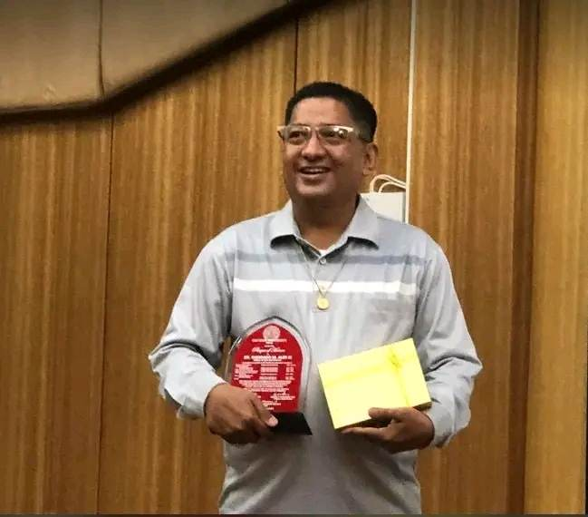

Possesses significant teaching experience in various computer-related subjects such as basic programming, data communications, and webpage development, among others. They make a conscious effort to stay informed about advancements in their field by regularly participating in seminars and training sessions.
SPECIALIZATION
- Actively engaged in professional organizations like the Philippine Computer Society and the Philippine Society of Information Technology Educators. They have considerable knowledge of the accreditation process and have worked as a department chairperson for accrediting agencies such as PAASCU and IQUAME.
- Committed to serving their community. They hold the position of President of the Villa Lessandra Homeowners Association Phase 1 in Bacoor Cavite, where they lead general membership meetings and act as a representative to public officials. Furthermore, they are a Microsoft Ambassador in Education and conduct Train the Trainers seminars/workshops for public school teachers.
- A Microsoft Innovative Educator Expert (MIEE). They design and share learning activities with other educators worldwide who are part of the Microsoft Education Network. Lastly, they have taught online learning techniques using Edmodo and NEO LMS to San Beda College faculty members.
Favorite Expression!
- PARE BAKET KA LATE PARE?
- Sumama kana sa beach
- SHEEEET NA MALAGKIT
- SWEET HEART!
- OOOOH OH OOOOO OH OOOH!!
Academic Qualitifications:
| Degree |
| Doctor of Education Doctor of Education NTC College and High School
|
| Master in Information Technology Southville Int school & colleges
|
| Master of Arts in Teaching
|
| Bachelor of Science in Computer Engineering
|